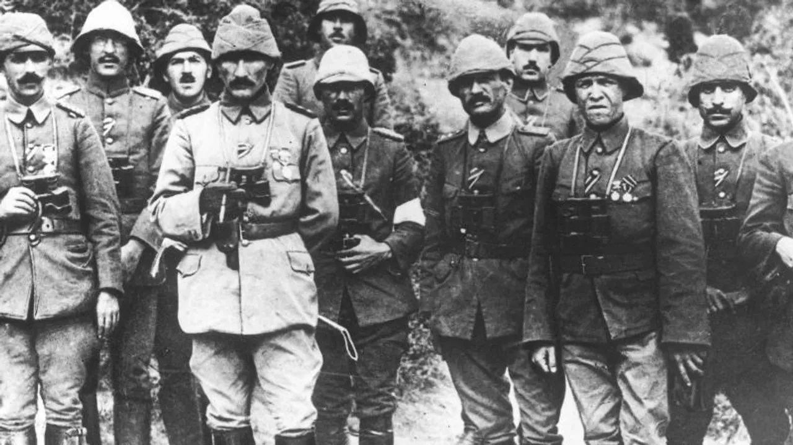

Who is Mustafa Kemal Ataturk?
Mustafa Kemal Ataturk was born in 1881 in Thessaloniki and became a great leader who played a pivotal role in the Turkish nation's struggle for independence, founding the Republic of Turkey. He received military education in the Ottoman Empire at a young age and quickly rose through the ranks with his exceptional military strategies. However, Atatürk's life was shaped not only by his military victories but also by the profound reforms he implemented. The greatest of these reforms was the establishment of the Republic of Turkey in 1923, marking one of the most significant steps in the modernization of the Turkish nation.
One of the most crucial moments in Ataturk's military career was the Gallipoli Campaign. In 1915, during the battle against the Allied Powers attempting to invade the Ottoman Empire, Atatürk's leadership led the Turkish soldiers to a significant victory, changing the course of world history. The Gallipoli Campaign was not only a turning point for the Ottoman Empire but also for the entire world. Ataturk’s strategic brilliance and military intelligence determined the fate of the Turkish nation and ensured victory against enemy forces. At the same time, he began to be recognized as a leader who promoted peace and diplomacy globally.

During the Gallipoli Campaign, Ataturk not only boosted the morale of Turkish soldiers but also showed great respect to enemy soldiers, emphasizing the humanitarian aspects of the conflict. However, a step that further deepened and concretized this approach was a letter he wrote years after the Gallipoli Campaign, in 1934. The letter he wrote to the mothers of the Anzac soldiers reflects Ataturk’s peaceful approach and respect for humanity.
The letter reads:
"Heroes who shed their blood on this land!
You are resting in the soil of a friendly homeland.
Rest in peace, side by side with Mehmetcik.
Mothers who sent their sons to war from distant lands!
Stop your tears, your sons
Rest in our hearts, and they will sleep in peace.
Having given their lives for this land,
They have now become our sons.
Mustafa Kemal Ataturk, 1934"
This letter expresses Ataturk’s deep humanity and compassion towards the painful side of war. This important document shows that Ataturk was not only a military leader but also a leader who advocated for world peace.
Ataturk is remembered not only for his military victories but also for the profound reforms he made to transform Turkey into a modern, secular state. The declaration of the Republic in 1923 marked the end of the Ottoman Empire and the beginning of a new state based on popular sovereignty. With the establishment of the Republic, Atatürk implemented reforms such as secularism, women's rights, and educational reforms, helping Turkey evolve into a modern society. The granting of voting and political rights to women was a step reflecting Ataturk’s commitment to gender equality. Additionally, reforms such as adopting the Latin alphabet and separating religion from state affairs helped Turkey align with Western values. Ataturk’s influence on the international stage was also significant. His recognition as a global leader is evidenced by the fact that he was featured on the cover of Time magazine twice. First, in 1923, shortly after the founding of the Republic, he was recognized as one of the world’s leading figures and named Person of the Year. In 1927, he was again featured on the cover, solidifying his position as an internationally respected leader. What sets Ataturk apart is not only his role as a military leader and the founder of the Republic of Turkey, but also his vision for global peace, modernization, and social reforms. Atatürk’s efforts to build modern Turkey earned him global recognition. Especially after founding the Republic in 1923, he became recognized as a great leader worldwide, attracting the attention of prestigious magazines like Time. These honors emphasize that Atatürk was not just a leader of Turkey, but a globally respected figure.
Ataturk not only achieved success in domestic politics but also promoted peace in foreign policy, introducing Turkey to the world. With his famous slogan, "Peace at home, peace in the world," he advocated for peace not only within Turkey but also globally, gaining great respect in international relations. Ataturk was never a war-driven leader; instead, after securing Turkey's independence, he pursued a peaceful foreign policy and worked to establish friendly relations with other countries. Mustafa Kemal Ataturk’s funeral, held on November 10, 1938, was a grand ceremony attended by leaders and military commanders from all over the world. One notable aspect of the ceremony was that even the commanders who fought against Atatürk during wars attended his funeral. This is a testament to the universal respect for Atatürk’s leadership and the admiration for his humanity. General Sir William Riddell Birdwood, who commanded the Anzac forces during the Gallipoli Campaign, and German General Erich von Falkenhayn, were among those who attended, demonstrating their respect for Atatürk’s military leadership. Similarly, Greek commanders also attended the funeral, highlighting Ataturk’s ability to foster peaceful relations even with former adversaries, showcasing his leadership qualities.
Ataturk’s funeral was not only a significant event for the Turkish people but also for the entire world, as it marked the departure of a globally respected leader. The attendees were not only commanders who had fought against him in battles but also leaders who admired Atatürk’s peaceful policies. This was a powerful proof that Atatürk was not only a military victor but also a symbol of peace and leadership for humanity
Ataturk’s funeral demonstrated that his influence and vision of leadership were not only recognized by his own people but also by the world. The legacy he left behind continues to shape Turkey today.
Atatürk's Principles
- Republicanism
- Nationalism
- Populism
- Statism
- Secularism
- Reformism
Chronological Highlights of Atatürk's Life and Achievements
- 1881 - Born in Thessaloniki, then part of the Ottoman Empire.
- 1915 - Achieved a historic victory in the Gallipoli Campaign, becoming a celebrated military leader.
- 1919 - Began the Turkish War of Independence by traveling to Samsun on May 19 and organizing national resistance.
- 1920 - Established the Grand National Assembly of Turkey in Ankara, becoming its first president.
- 1922 - Led Turkish forces to victory in the Great Offensive, ensuring the liberation of Anatolia.
- 1923 - Proclaimed the Republic of Turkey on October 29 and became its first president.
- 1924 - Abolished the Ottoman Caliphate, finalizing the transition to a secular republic.
- 1928 - Replaced the Arabic script with the Latin-based Turkish alphabet to improve literacy.
- 1930 - Granted women the right to vote and run for municipal elections.
- 1934 - Introduced the Surname Law and was officially given the name "Atatürk" ("Father of the Turks").
- 1931 - Declared the principle "Peace at Home, Peace in the World," defining Turkey's peaceful foreign policy.
- 1938 - Passed away on November 10 in Dolmabahçe Palace, Istanbul.
For more information, visit Ataturk's Biography on Britannica.